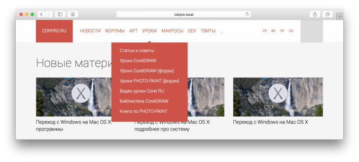

Дизайн и вёрстка cdrpro.ru
Sancho / 19.02.2010, 00:19/15:26
С недавних пор меня смущает текущий дизайн, да и вёрстка тоже, этого сайта. Я хочу сделать ре-дизайн. Есть ли какие то идеи или замечания? было бы весьма кстати. Хотелось бы услышать мысли как постоянных участников, так и вновь прибывших.
Hepatitis C, я немного начал переделывать меню:

Справа будут иконки.
Sancho, Блин, вот как теперь что-то своё выкладывать... уже как-то и не хочется, если есть уже идея, зачем давать повод для раздумья...
У меня всё в блокноте, все эскизы. Один немного отрисовал и то только шапку и немного тела. Не понятно, что с цветами сделать, серый+красный отлично гармонируют, но для меня эти сочетания более подвижные, чем спокойные и располагающие на длительное контактирование. Сам еще не могу определиться с цветами, так как у меня это всё черно-белое в блокноте, повторил похоже как в блокноте. Во втором изображении пытался добавить какой то цвет, но вижу, что слишком «горячий» вызывающий...
1 - вид браузерный
2 - общий вид макета, недоотрисовывал тело и подвал еще, требуется немного больше времени.
Hepatitis C, ну как минимум я увидел подтверждение некоторым своим мыслям, что нужно сделать. Спасибо :)
Sancho, если Вам интересно, я могу к выходным оба сайта дорисовать, со всеми шаблонами-страниц которые я продумывал. Может это будет интересно.
Hepatitis C, тратить время на вырисовывание не нужно, достаточно просто рамками и текстом обозначить где что.
Тогда я к выходным попробую свои идеи реализовать и разместить.
Так же я прорисовываю блоки (дивы) под кнопки и под все активные элементы, потому, что потом не догадаться иногда, как это всё верстать, ровнять по какому краю...
мне нравится
Да, легче и возможно уютнее :)
не знаю, может это у меня настройки монитора такие или зрение, но шрифт текста именно на cdrpro какой-то мелкий и тонкий. А текст серого "оффтопа", вообще, почти сливается с фоном. Может быть, попробовать шрифт немного побольше сделать? Или у остальных всё чётко и читабельно?
Страницы